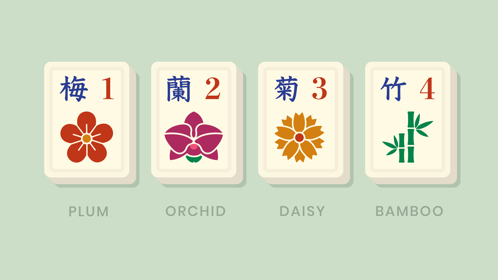
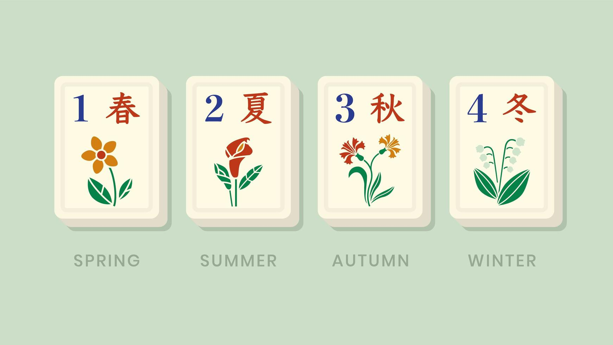
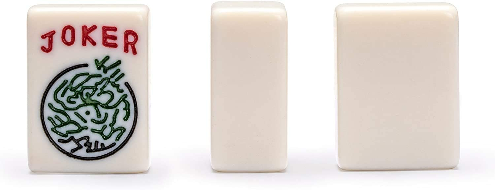

Chinese Mahjong:
Chinese Classical Mahjong is known to be the oldest version of the game. This was the first mahjong game version introduced in America and became the model for many forms that were created since then. This form of mahjong focuses on simplicity and does not have many hands that you can make, this slows down the pace of the game. Compared to the other versions both Chinese and Hong Kong mahjong have extra tiles called bonus tiles. They are marked with 4 types of flowers and 4 different seasons.
Cantonese Mahjong:
Cantonese Mahjong also goes by the name of Hong Kong Mahjong game. It is the most common variety and only posses slight differences as compared with the classical version. Like Chinese mahjong this version has bonus tiles that Japanese and Western versions don't have. Unlike other tiles these are not used for melds. Instead when one is drawn it is placed seperate from your stack and you draw again. If you win with one in your possesion, you get more points. It is common in this version for players to make small bets ranging from 1-15 dollars.
Japanese Mahjong:
Japanese Mahjong is the most commonly used form of mahjong game among Japanese. This includes rules and scoring guidelines that have been standardized and used in video games. The riichi and dora mark the highlights of the game. Of all of the different variations of mahjong, Japanese Mahjong is the only format the holds tournaments. This version is most popular in Japan but has been gaining attention in the US. Unlike other versions this mahjong also has red tiles for every 5 that is worth an additional han.


Western Mahjong:
Western Classical Mahjong is the version that was revised from the Chinese classical and was introduced in America. Bobcock made the changes in this American version in 1920s. His version was adopted and recreated by players in the later years. This version was popular with military as it resembled gin rummy the card game. This version is the only one with wild cards and jokers.
